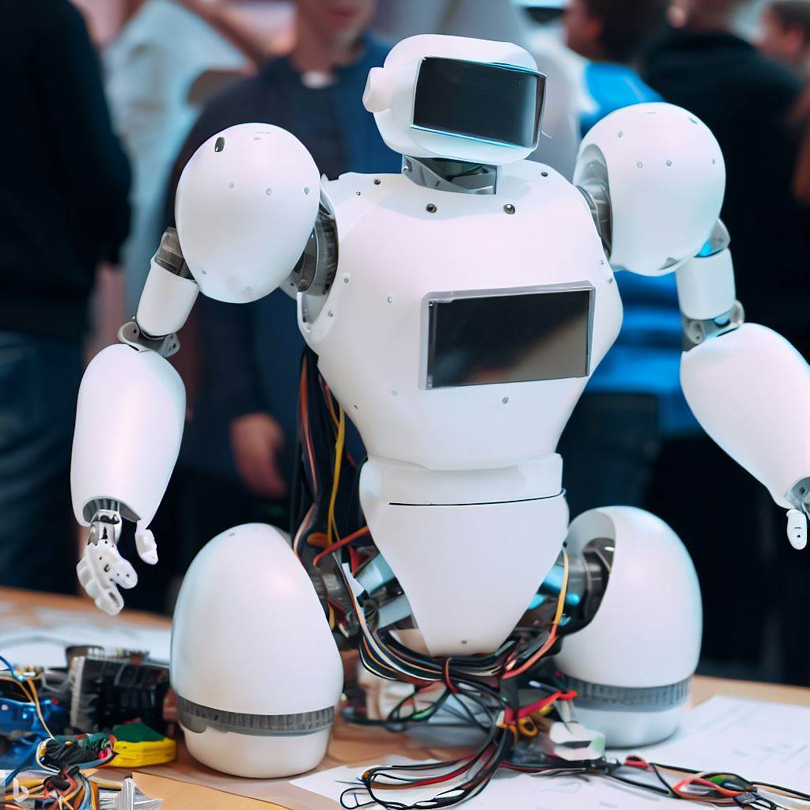

Третий Всероссийский конкурс «Робохакатон».
Трэки текущего года:
Адаптивные системы управления — CoSpace
Умные производственные системы
Системы управления автономным движением транспортных средств
Модельно-ориентированное проектирование роботов
Хакатон проходит на расстоянии — участвовать можно, имея под рукой только компьютер с отличным соединением к сети Интернет!
Ждем коллективы от двух до пяти участников, готовых решать сложные вопросы и открывать для себя что-то новое.
